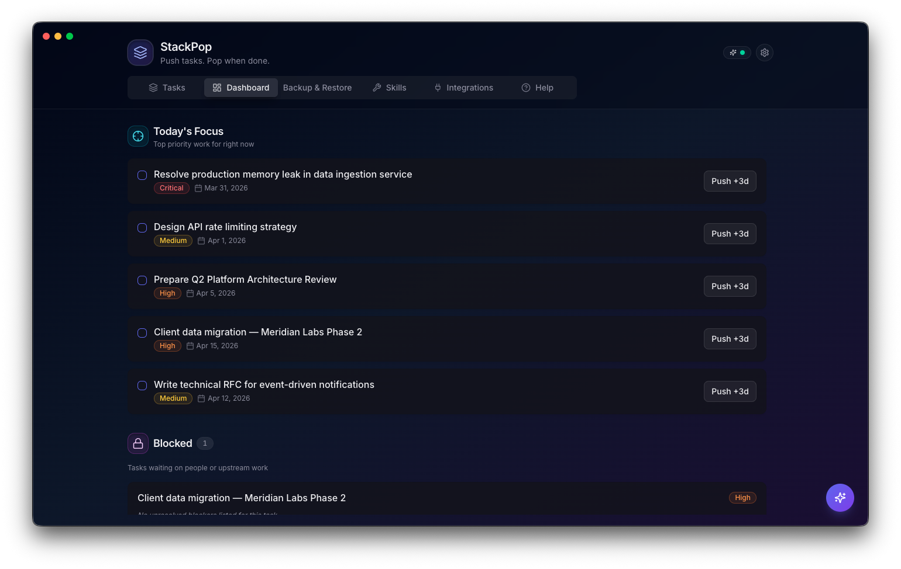
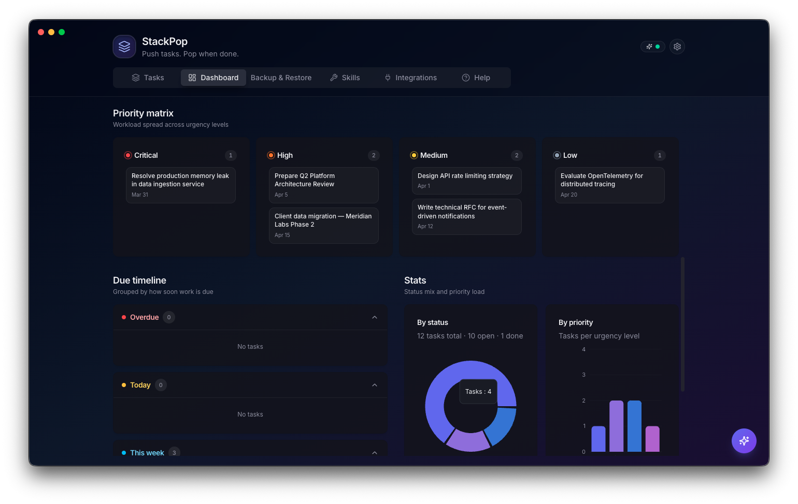
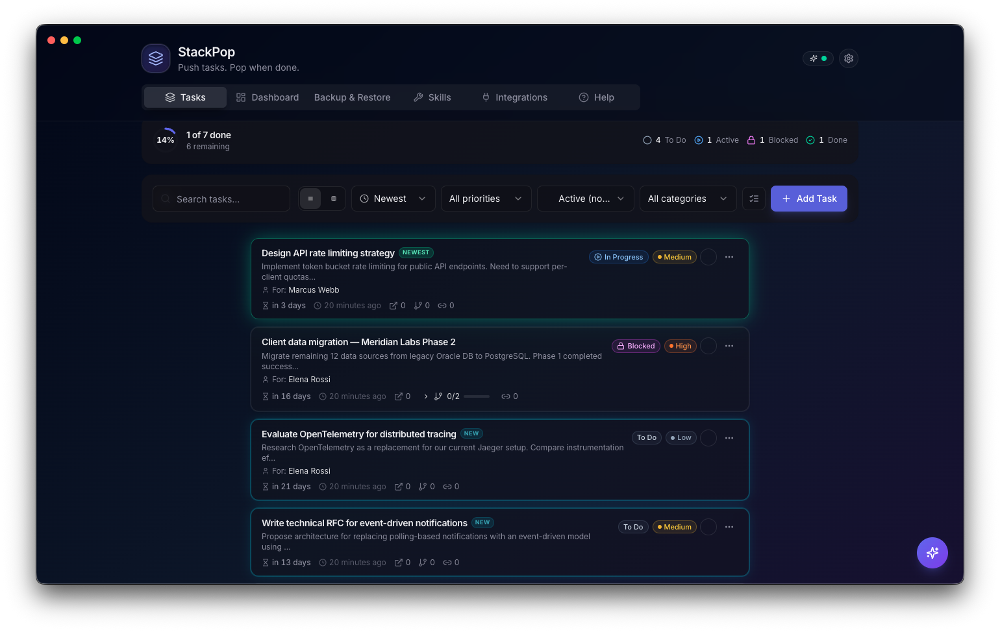
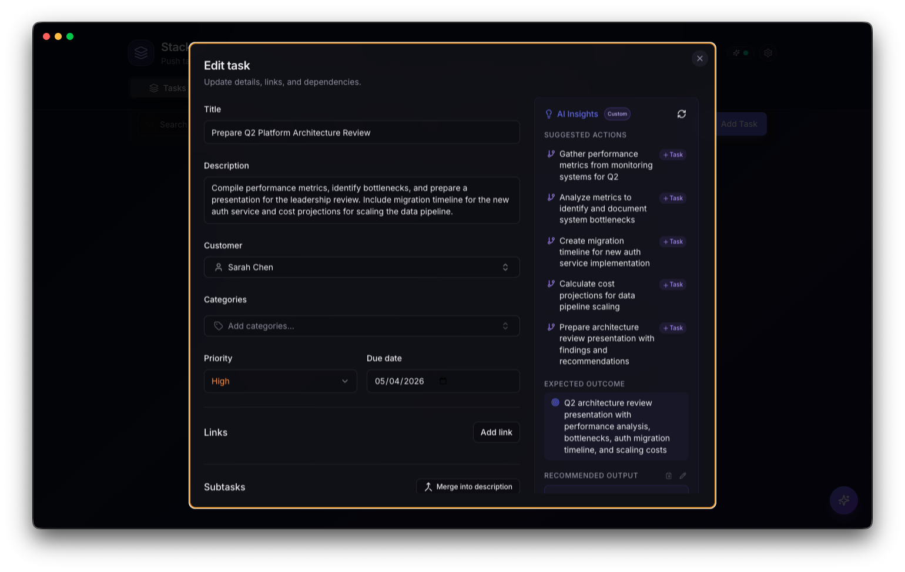
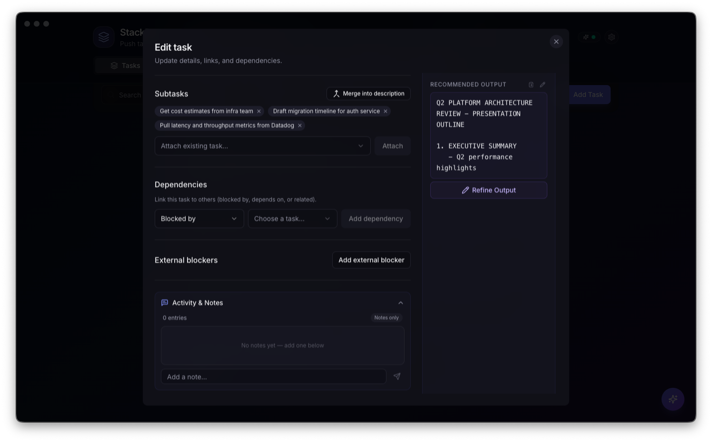
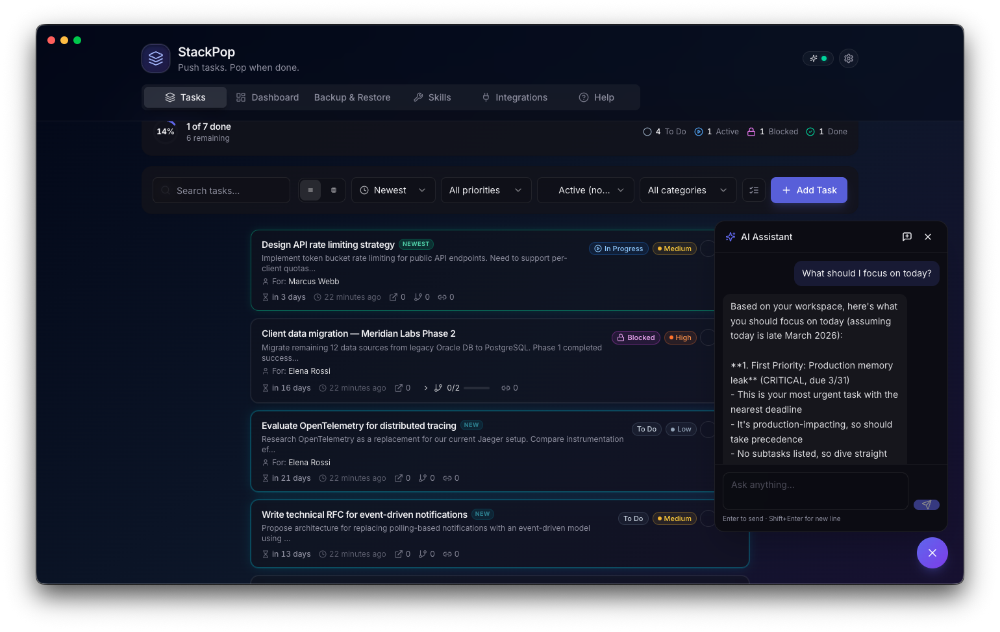
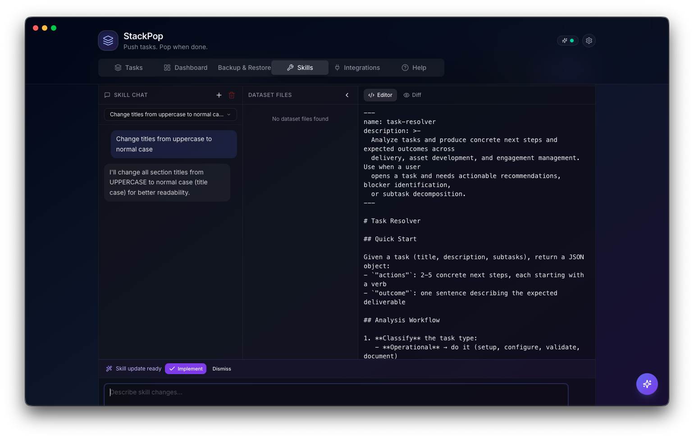
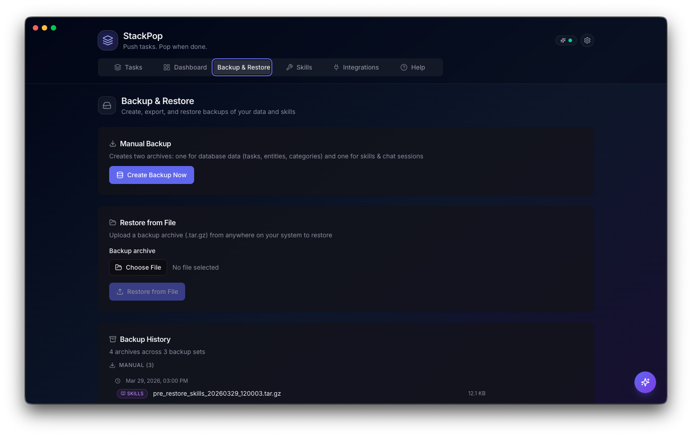
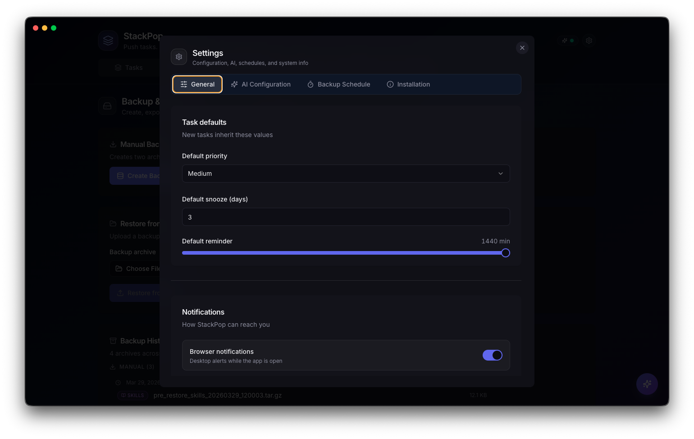
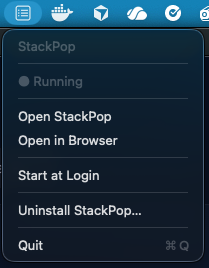

Push tasks. Pop when done.
Local-first • AI-powered • Privacy-first • macOS native
Use arrow keys or swipe to navigate
A task management app that runs entirely on your Mac. Paste raw text — emails, Slack messages, notes — and AI turns it into structured tasks with priorities, subtasks, and recommended actions.





Actions • Expected outcomes • Drafted responses • Refinement chat

Context-aware — knows your tasks, contacts, priorities, and due dates.

Live editor • Chat-driven changes • Diff view • Multiple skills
Everything runs locally. Data never leaves your machine.
Paste raw text — AI parses it into structured tasks.
Menu bar, notifications, Quick Actions, startup launch.
Scheduled backups, export archives, one-click restore.
Hash-based dedup prevents creating the same task twice.
Create domain-specific AI behaviors with custom datasets.



Menu bar • Quick Actions • Notifications • Start at login
1. Download the DMG from Releases
2. Drag StackPop to Applications
3. Run xattr -cr /Applications/StackPop.app
4. Launch and follow the onboarding guide
Requires macOS 12+ • Docker Desktop or Colima